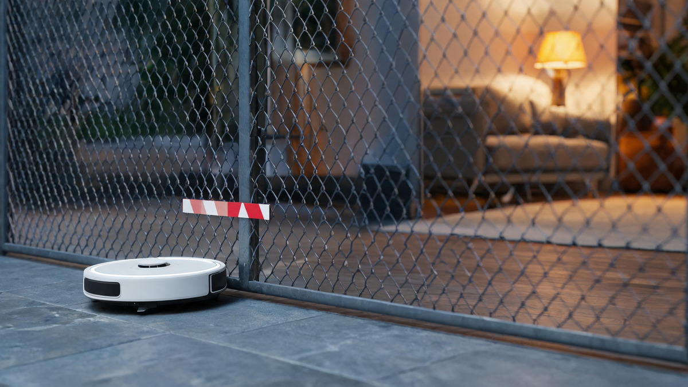

FCC Bans Foreign Robot Vacuums & Chinese Robots: What Changes

📑 Table of Contents
The FCC has effectively barred the next generation of robot vacuums from the US market. On July 28, 2026, the agency added foreign-produced "advanced robotic devices" and "connected power inverters" to its national-security Covered List — a registry of equipment that can no longer receive FCC authorization, meaning new models cannot be imported or sold in the United States (Reuters). The move sweeps up robot vacuums, robotic lawnmowers, companion bots, humanoid and quadruped robots, and it lands hardest on a category dominated by Chinese manufacturers.
What exactly is banned
The rule covers autonomous mobile robots weighing more than about 4.4 pounds — virtually every mainstream robot vacuum and lawnmower — plus humanoids, quadruped robots and "connected power inverters" used in solar and grid projects. The mechanism is the FCC's equipment authorization program: devices on the Covered List cannot receive the authorization required for import and sale.
The update, issued by the FCC's Public Safety and Homeland Security Bureau, cites "unacceptable risks to the national security of the United States or the safety and security of United States persons," with footnotes singling out China. The FCC's official notice confirms that new foreign-produced power inverters and robots are now on the list.
The ban judges origin, not security
The rule's central tension: it evaluates where a product is made, not how secure it is. A robot vacuum assembled in the US by a Chinese-owned company could qualify; a Chinese-made device with exemplary security practices cannot. The ban targets the origin of products rather than their security practices — a distinction critics were quick to seize on.
The security concerns behind the rule are genuine. The Verge's coverage has documented a remote-access security scandal involving the DJI Romo robot vacuum, a reminder that these devices carry cameras, microphones and network connections into American homes. But the FCC's test is manufacturing location and foreign-government ties, not demonstrated risk.
What changes for consumers
The practical effects: fewer new models, higher prices, no recall. The top five robot vacuum brands — Roborock, Ecovacs, Dreame, Xiaomi and Narwal — are all Chinese entities (The Verge). Even Roomba, the American category pioneer, is now owned by Chinese contract manufacturer Picea. No major brand currently assembles its robots in the US; Matic assembles in California but reportedly falls short of the rule's US-content threshold.
Existing devices are unaffected. Millions of robot vacuums already in American homes stay put, and consumables and replacement parts remain available. What dries up is the pipeline of new models from the brands that defined the category — unless they shift production or win waivers — and analysts expect prices for what remains to climb. The rule also carves out surgical robots, wheelchairs, self-driving cars and trains, unmanned aircraft and underwater vehicles, and fixed industrial arms.
The energy twist: power inverters
The less visible half of the ruling may matter more for the US energy transition. Wood Mackenzie estimates that of roughly 200 GW ac of PV inverters delivered for US commercial, industrial and utility projects over the past decade, more than 90% were imported — over 70 GW from Chinese-headquartered manufacturers, mostly built in Southeast Asian factories (Wood Mackenzie). Chinese vendors held about half of the US inverter market in 2024–2025.
The gap is so large that manufacturers have announced more than 100 GW ac of US PV and power-conversion inverter manufacturing capacity by the end of 2027. But announced capacity is not built capacity: inverter prices are expected to rise in 2027 as supply reconfigures, and the phase-out of the 45X manufacturing tax credit starting in 2030 adds further pressure.
Waivers and the road ahead
The ban is not absolute. Under FCC guidance, DHS evaluates individual determination and waiver requests, and waivers require commitments to US manufacturing. Reuters, citing four unnamed sources, reported that the FCC is expected to exempt many non-Chinese suppliers — Netgear has already received a waiver. The rule may therefore function less as a total import ban than as a forced restructuring of supply chains, with content and manufacturing requirements doing the heavy lifting.
China's response
China's commerce ministry called the policy "discriminatory and suppressive against Chinese companies and products." In an adjacent development, the administration announced 100% tariffs on many drones and all aircraft parts on August 13, 2026 — a separate action, but part of the same tightening landscape for Chinese hardware in US supply chains.
The bottom line
For consumers, the immediate answer is simple: don't throw away your robot vacuum. The longer-term picture is a market in transition — fewer choices, higher prices, and a supply chain being rebuilt at a scale the United States has not attempted before. Whether the announced manufacturing capacity arrives in time to keep both the grid and the living room stocked is the question that will define 2027.